IntegritasIntegrity
Pemuda yang jujur, konsisten, dan teguh dalam memegang nilai‑nilai luhur.Young people who are honest, consistent, and steadfast in upholding noble values.
❦ Membangun Peradaban, Menebar Kebaikan Building Civilization, Spreading Kindness ❦
Wadah pemuda‑pemudi berintegritas, berdedikasi tulus untuk kepentingan masyarakat luas — berjiwa Pancasila & Berakhlakul Karimah. A platform for young people of integrity, sincerely dedicated to the wider community — guided by Pancasila & noble character.
Revolution of Civilization adalah wadah bagi pemuda‑pemudi Indonesia yang ingin merevolusi peradaban melalui kebaikan, kepedulian, dan karya nyata di tengah masyarakat. Revolution of Civilization is a platform for Indonesian youth who want to transform civilization through kindness, compassion, and tangible action in the heart of the community.
Pemuda yang jujur, konsisten, dan teguh dalam memegang nilai‑nilai luhur.Young people who are honest, consistent, and steadfast in upholding noble values.
Kritis dalam berpikir, progresif dalam bertindak, kreatif dalam berkarya.Critical in thinking, progressive in action, creative in work.
Tulus mendedikasikan diri untuk masyarakat luas tanpa membeda‑bedakan.Sincerely devoted to the wider community without discrimination.
Menumbuhkan jiwa leadership dalam mengatasi konflik dan tantangan sosial.Cultivating leadership to navigate conflict and social challenges.
“ Menjadikan pemuda yang memiliki integritas dan intelektualitas yang berkualitas, yang bisa mengedepankan kepentingan bersama, serta dapat menjadi panutan bagi pemuda lainnya. To shape young people of true integrity and intellect who put the common good first and become a role model for other youth. ”
Tiga misi inti yang menuntun setiap langkah pengabdian dan pergerakan kami. Three core missions that guide every step of our service and movement.
Mengintegrasikan tujuan bersama yang berdasarkan nilai adat istiadat serta mampu menciptakan pemuda‑pemudi yang siap berkompetisi di tengah perkembangan zaman. Aligning a shared purpose rooted in tradition and customs, while shaping young people ready to thrive in a changing world.
Meningkatkan profesionalitas, kapabilitas, serta sumber daya manusia yang dapat beradaptasi dalam segala bidang, dan menumbuhkan jiwa leadership dalam mengatasi konflik sosial. Building professionalism, capability, and adaptable people across every field — nurturing the leadership needed to resolve social conflict.
Terwujudnya pemuda‑pemudi yang bertaqwa kepada Allah SWT, penuh perhatian dan peka dalam setiap permasalahan dengan spirit dan mentalitas yang kuat, kreatif dan inovatif dalam berkarya. Raising youth who are devout, attentive, and sensitive to every issue — with strong spirit, creativity, and innovation in all they create.
Sebagai wadah berhimpun para pemuda‑pemudi untuk mengembangkan sikap‑sikap kepemudaan yang kritis dalam berpikir dan progresif dalam bertindak, sekaligus menghindarkan diri dari sikap dan perilaku yang menyimpang (Epigonistik). A gathering place for young people to develop a youth spirit that is critical in thinking and progressive in action — while resisting hollow imitation and unprincipled behavior (Epigonism).
Komunitas kami tidak hanya berbagi dengan anak yatim. Kami juga menggalang dana untuk masjid yang sedang direnovasi, membantu lansia yang tak memiliki apa‑apa, serta menemani saudara‑saudari yang berjuang melawan tumor. Our community doesn't only share with orphans. We also raise funds for a mosque under renovation, support elderly people who have nothing, and stand beside brothers and sisters battling tumors.
Santunan, kebutuhan harian, pendidikan, dan kasih sayang untuk anak yatim‑piatu di lingkungan kami. Care packages, daily needs, schooling, and warmth for orphans in our community.
Bantuan biaya pengobatan dan dukungan untuk mereka yang sedang berjuang melawan tumor. Treatment cost assistance and support for those fighting tumors.
Penggalangan dana untuk masjid yang sedang direnovasi dan masih kekurangan dana penyelesaian. Fundraising for a mosque under renovation that is still short of the funds needed to finish.
Mengunjungi dan membantu lansia yang sendirian dan tidak memiliki siapapun untuk merawat mereka. Visiting and supporting elderly people who are alone with no one to care for them.
Donasi yang Anda berikan kali ini akan dibagi dua: 50% untuk membantu pasien tumor dan 50% untuk anak yatim. Your donations this round will be split equally: 50% for tumor patients and 50% for orphaned children.
❦ Membangun Peradaban, Menebar Kebaikan Building Civilization, Spreading Kindness ❦
Mari bersama hadir dan berbagi kebahagiaan
untuk mereka yang membutuhkan.
Let us come together and share happiness
with those who are in need.
“ Aku dan orang yang menanggung anak yatim (kedudukannya) di surga seperti ini. I and the person who takes care of an orphan will be in Paradise like this. ” — HR. Bukhari— Hadith narrated by Bukhari
Setiap kebaikan yang Anda berikan sangat berarti untuk masa depan mereka. Every kindness you give means a lot for their future.
Terima kasih kepada para donatur yang dengan tulus berbagi kebaikan. Thank you to the donors who have sincerely shared kindness.
Keanggotaan Revolution of Civilization adalah mereka yang dengan ikhlas mendedikasikan diri untuk kepentingan masyarakat luas tanpa membeda‑bedakan, serta berjiwa Pancasila dan Berakhlakul Karimah. Members of Revolution of Civilization are those who sincerely devote themselves to the wider community without discrimination, guided by Pancasila and noble character.
Ketua & Penggerak Revolution of Civilization Chair & Founder, Revolution of Civilization
Memimpin gerakan kepedulian di Pandeglang, Banten — menggerakkan anggota, mengoordinasikan kegiatan sosial, dan menjadi penghubung antara para donatur dengan mereka yang membutuhkan. Leading the movement from Pandeglang, Banten — mobilizing members, coordinating social work, and bridging donors with those who need it most.
Momen‑momen nyata dari kegiatan komunitas — santunan anak yatim, renovasi masjid, kunjungan lansia, dan gotong royong bersama warga. Real moments from our community work — caring for orphans, renovating a mosque, visiting the elderly, and helping our neighbors together.
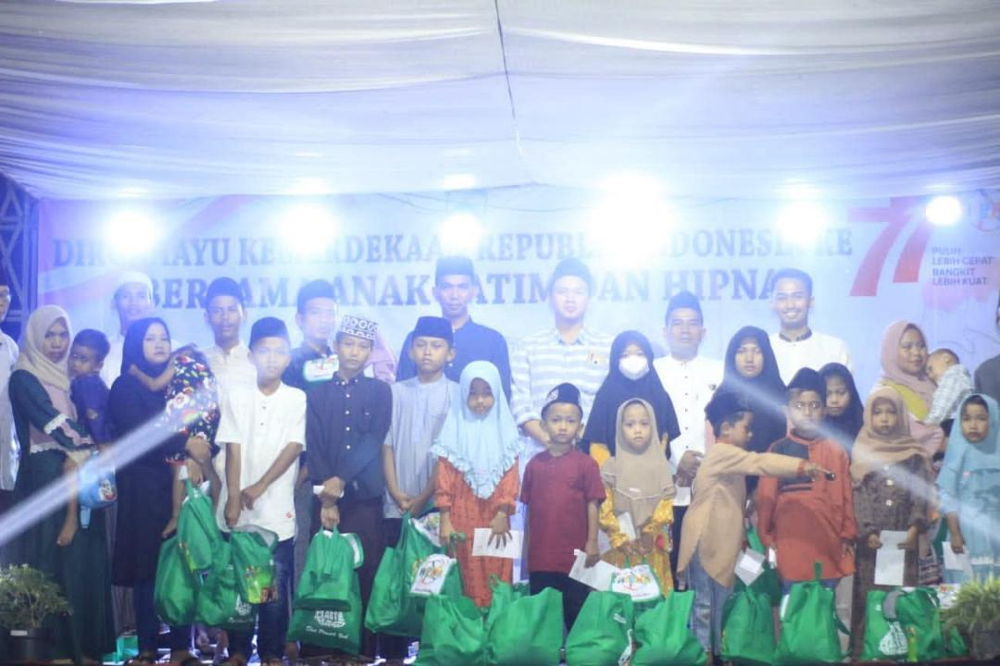
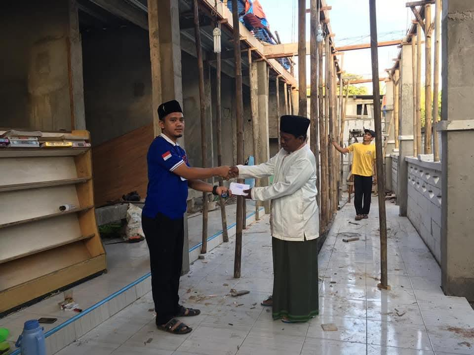
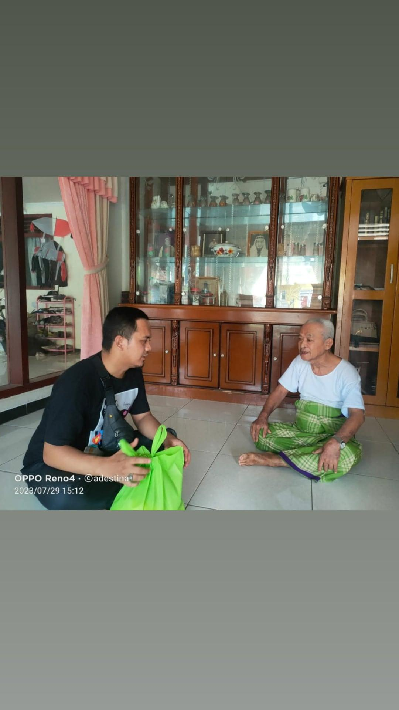
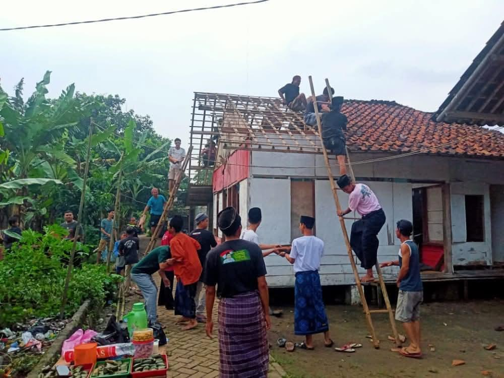
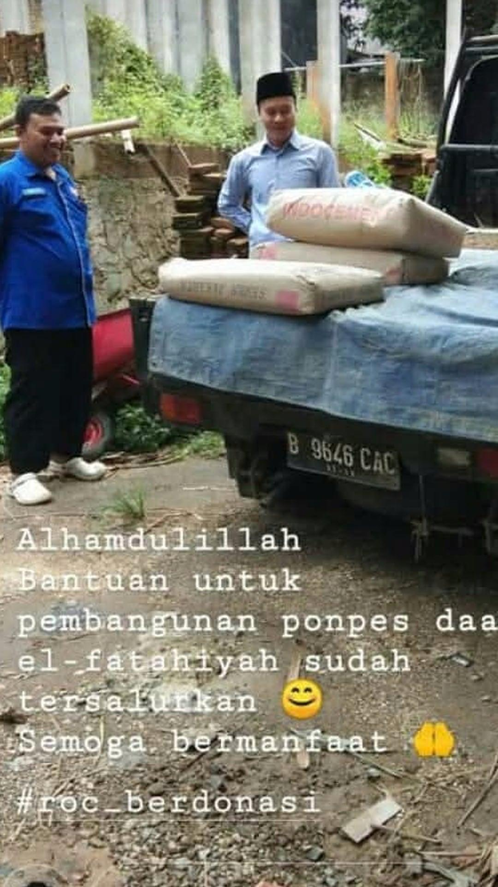
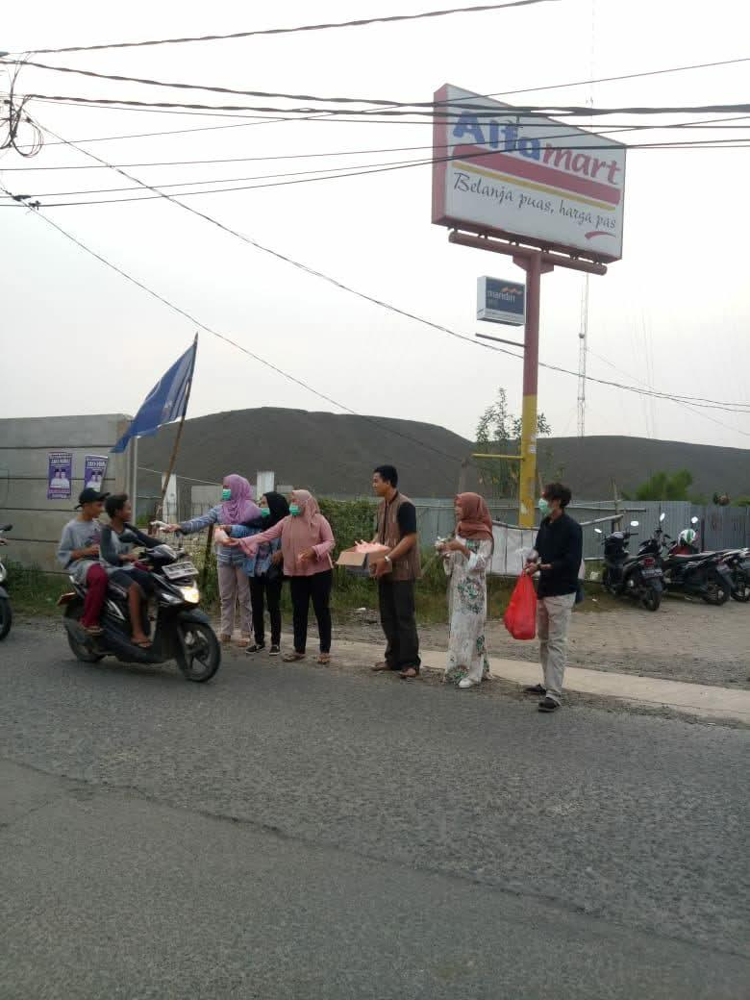
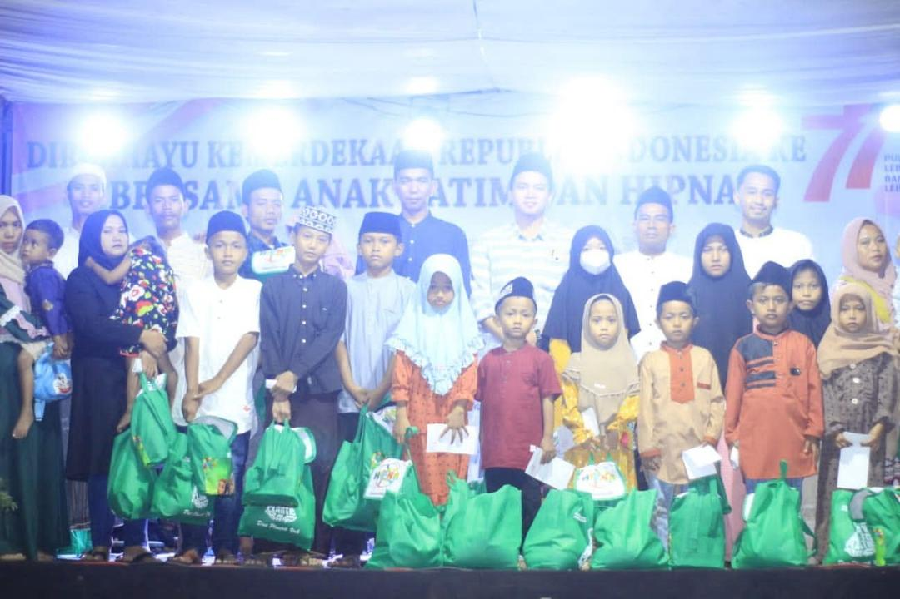
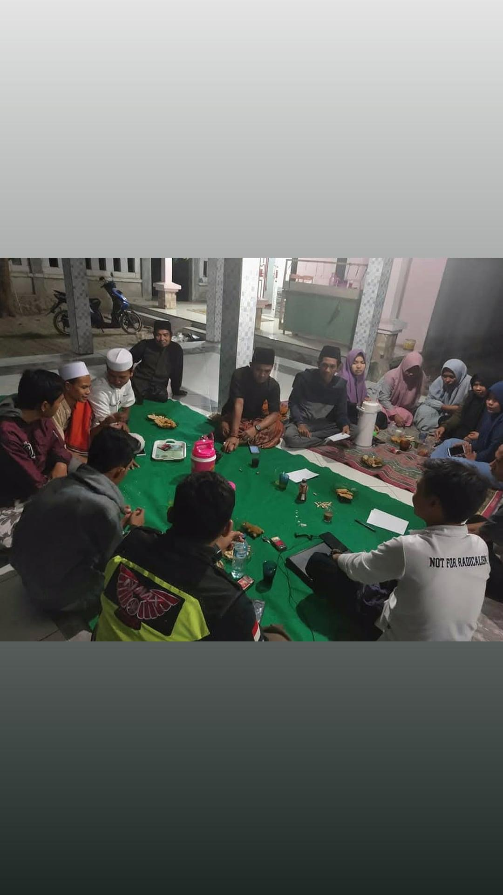
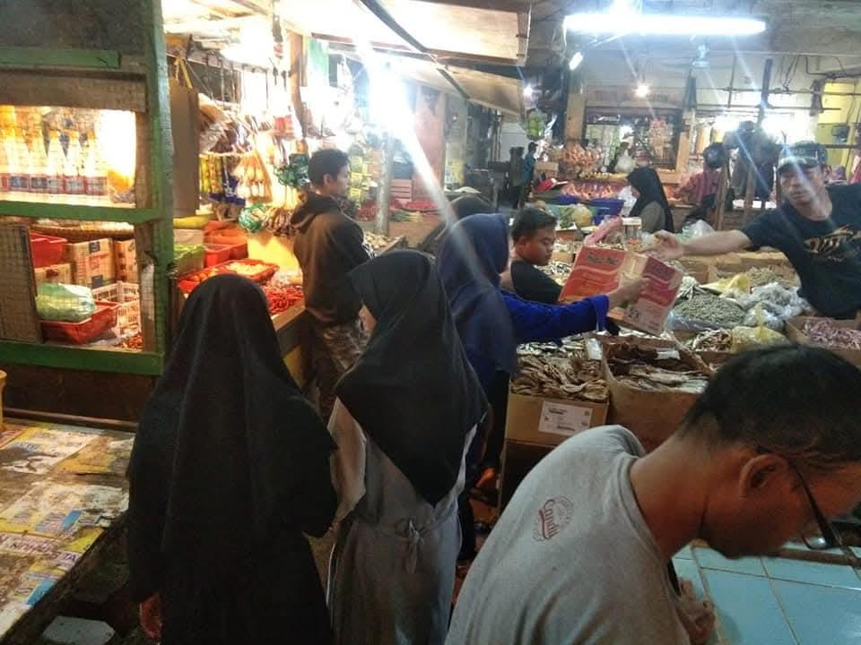
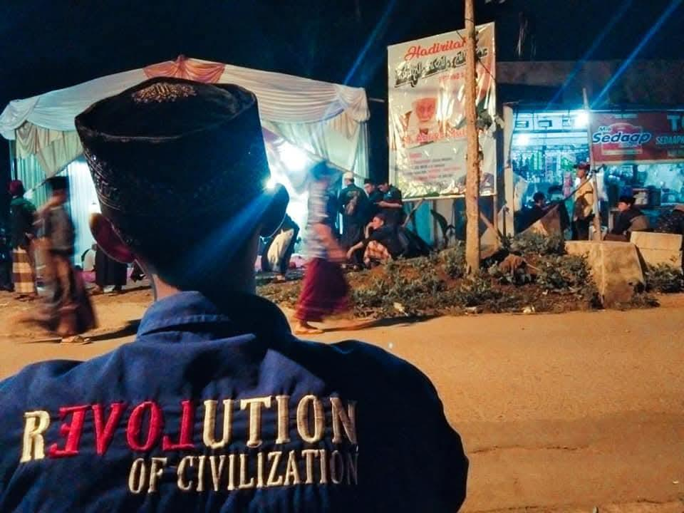
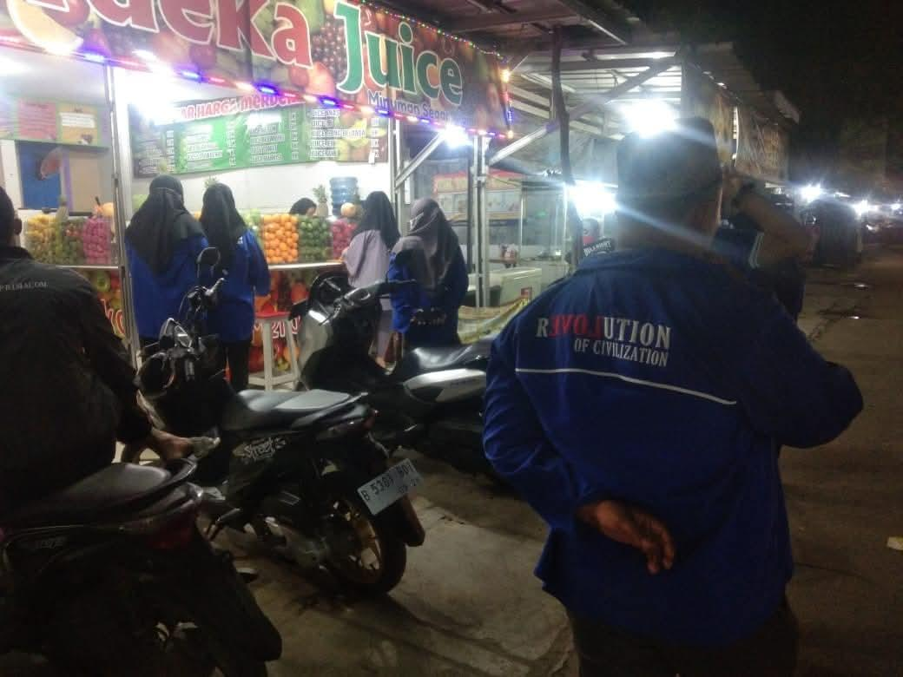
Untuk donasi, kerja sama, atau bergabung sebagai anggota, hubungi kami melalui kanal di bawah ini. For donations, partnerships, or to join as a member, reach us through any of the channels below.